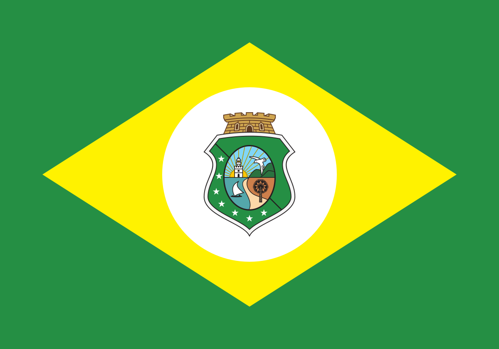

ceará é um estado muito conhecido pelas suas belas praias, linguagem diferencida e comidas inovadoras.
muitas pessoas acham que o ceará é um estado pobre, com pessoas de pouco estudo e estruras particulamente pobres.
porém essas pessoas estão erradas, ceará é um dos estados mais bonitos para se visitar, com varios pontos turisticos espalhados nas cidades do nosso maravilhosos estado.
ceará é um estado muito conhecido pelas suas belas cidades turiticas, entre elas se encaixam:
Fortaleza

Caucaia

Juazeiro do norte

Sobral

Tianguá

Camocim

Viçosa do Ceará
Granja
Itarema
entre outros...